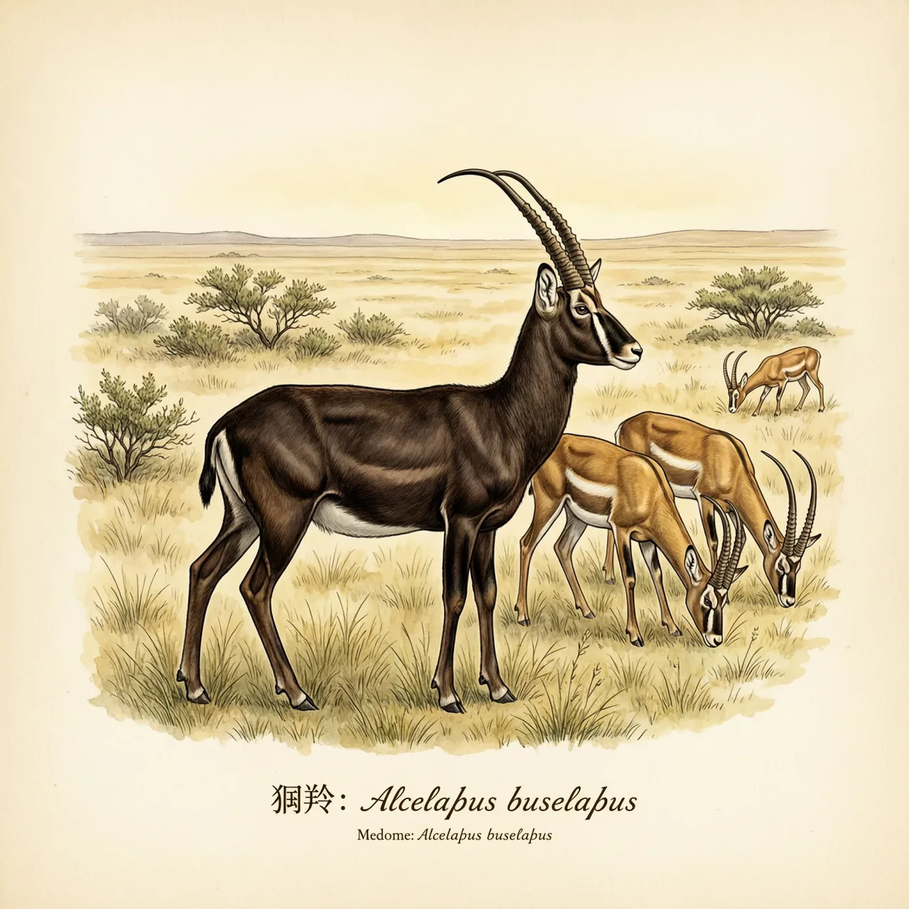
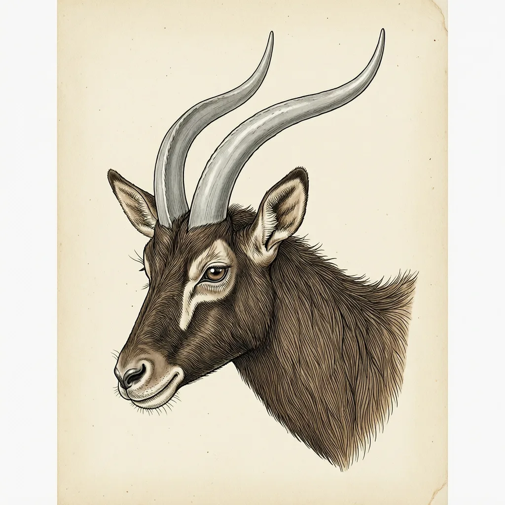

狷羚是非洲草原上的大型羚羊，立高约1.5米，体重120到200公斤，见于西非、东非和南非的短草草原与灌木林地。它白天活动，清晨与黄昏觅食，通常5到20头一群，由一头打斗上位的雄性带领。它的领地边界被认为靠成排粪堆标出。
早上和黄昏，是狷羚低头吃草的两个时段。它是白天活动的羚羊，分布从西非、东非一直到南非，落脚之处都是开阔草原与零散的灌木林地。选这种地方的理由很实在：狷羚吃短草，而短草要在没有被林冠遮断的开阔地上才连得成片。成年狷羚立高约1.5米，体重约120-200公斤，雄性深褐色，雌性黄褐色。
狷羚的群体大小很不整齐：常见的是5到20头，条件合适时能攒到350头。带队的是其中一头雄性，而这个位置不是自动传给谁的，是靠打斗换手的。角在这类打斗里是主要武器：狷羚的角先向外弯，再折向前方，末端收成一个向后的尖，长度可达70厘米。雌性也长角，形状和雄性一样，只是群体的领队始终只有一头。
狷羚圈地用的是自己的粪便。一头占了地盘的雄性会在固定的几处排便，粪堆在领地边界上排成一对一对，低矮地连成一圈。外来雄性先闻到气味，再决定要不要硬闯；被气味挡住的那场架，就不用真的打。在狷羚属里，今天只剩下狷羚这一个物种。
